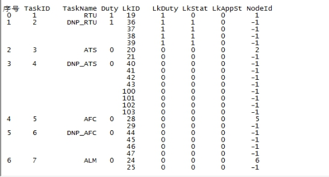
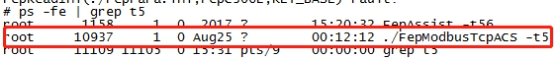

现场设备状态无法上传至综合监控界面上更新，部分情况下无法对现场设备进行远控操作。
2.1处理此类故障及操作时需准确判断定位所需重启的进程是在车站FEP还是中心FEP；
2.2在重启过程中要对造成的结果表现有明确的认知，并将其告知调度；
2.3重启过后需要验证其系统功能性，完备后方可作为重启成功。
3.1综合监控系统工作站；
下面将以ACS专业分解步骤:
4.1打开终端并连接至FEP（51、52均需），输入大写字母”I”，输出如下所示（部分）：

其中ACS部分如下：
序号 TaskID TaskName Duty LkID LkDuty LkStat LkAppSt NodeId
23 26 ACS1 1 82 0 0 0 16
83 0 0 0 -1
24 27 DNP_ACS1 0 84 0 0 0 -1
85 0 0 0 -1
86 0 0 0 -1
87 0 0 0 -1
25 28 ACS2 1 88 0 0 0 17
89 0 0 0 -1
26 29 DNP_ACS2 0 90 0 0 0 -1
91 0 0 0 -1
92 0 0 0 -1
93 0 0 0 -1
注意”Duty”一列，为1时是值班状态，0为非值班，如果同一个”TaskID”的任务在51及52处均为0，则说明此进程在两台FEP处均无值班。
4.2执行#ps –ef | grep **命令查询，其中**为各专业进程在FEP上的任务号，在”TaskID”这一列，如ACS则为T5、T7则实际输入指令为ps –ef | grep t5（附录2中有各专业进程命令行）；
命令执行后反馈如下图所示：

末尾含有任务号”-t5”关键词的条目为进程的详细信息，如红框内所示。注意：红框下方的grep t5为执行此项查询指令所建立的进程任务，非专业所用。
4.3使用kill命令终止进程运行
如果步骤（2）中没有找到对应内容则直接跳过此步到步骤（4）处。执行#kill 10937，其中”10937”为步骤（2）中查找出来的任务号。执行完kill指令后再次执行步骤（2）中的指令，红框内进程消失，则证明终止成功。
4.4启动进程
进入FEP目录/jffs2/FepC306L，执行”./FepModbusTcpACS -t5 &”，会打印一些报文，最终返回”./FepModbusTcpACS Initial OK!”则说明进程初始化成功。如果在步骤（2）中未查询到此任务进程，可以参照其他车站反馈信息进行执行。
4.5在另一台FEP处执行步骤（2）至（4）
4.6如果现场允许需动作设备，则需现场动作设备测试通信链路及功能是否正常。